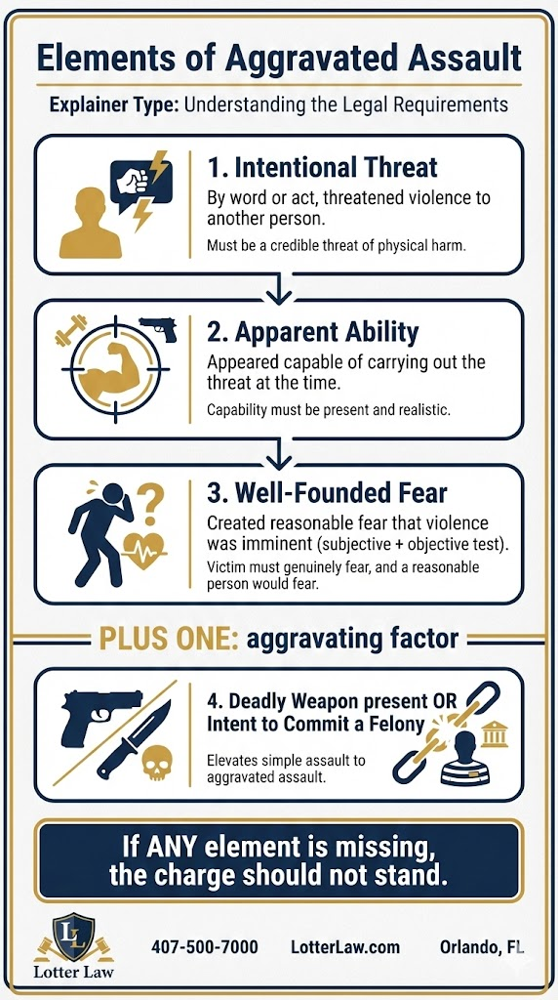

Aggravated Assault in Florida: Charges, Penalties & Defense Strategies
An argument escalates. A threat is made. A weapon is present. What started as a verbal confrontation now involves aggravated assault charges—a third-degree felony carrying up to 5 years in prison. In Florida, the difference between simple assault and aggravated assault comes down to specific legal elements that dramatically change the stakes.
If you're facing aggravated assault charges in Orlando or Central Florida, understanding what the State must prove—and where their case may fall short—can mean the difference between a felony conviction and getting charges reduced or dismissed.
What is Aggravated Assault in Florida?
Aggravated assault is defined in Florida Statute 784.021. It's an enhanced version of simple assault that involves additional factors making the offense more serious.
Legal Definition
Under F.S. 784.021, aggravated assault occurs when a person commits assault:
- With a deadly weapon without intent to kill, OR
- With an intent to commit a felony
The key distinction from simple assault (F.S. 784.011) is the presence of either a deadly weapon or felonious intent. Simple assault is typically a misdemeanor, while aggravated assault is always a felony. If the incident also involves physical contact, you may face battery charges as well.
What Must the State Prove?
To convict you of aggravated assault, prosecutors must prove three elements beyond a reasonable doubt:
Required Elements
- Intentional Threat: You intentionally threatened, by word or act, to do violence to another person
- Apparent Ability: You appeared to have the ability to carry out the threat at the time
- Fear Created: The threat created a well-founded fear in the victim that violence was about to happen
- PLUS Deadly Weapon OR Felonious Intent: You either possessed a deadly weapon during the assault, or you had the intent to commit a felony
The prosecution must prove all of these elements. If any one element is missing or cannot be proven, the charge should not stand.

Understanding "Apparent Ability" and "Well-Founded Fear"
These two elements—apparent ability and well-founded fear—are where many aggravated assault cases succeed or fail. Police are trained to assess these elements at the scene, but their initial impressions don't always hold up under cross-examination.
Apparent Ability: This doesn't mean you actually had to be able to carry out the threat. It means you appeared to have the ability at the time the threat was made. Courts look at the circumstances from the victim's perspective:
- Distance matters: A threat made from across a crowded room with no weapon in reach may not satisfy this element
- Physical barriers: Threats made through a locked door, from inside a car with windows up, or over the phone typically lack apparent ability
- The weapon must be accessible: If you threatened someone while a gun was in another room, the State may struggle to prove apparent ability
- Timing is key: The apparent ability must exist at the exact moment of the threat—not 5 minutes later
Defense Example: Lack of Apparent Ability
If you told someone "I'm going to get my gun and shoot you" while standing 20 feet away with no weapon present, the State must prove you appeared capable of carrying out that threat immediately. The statement itself doesn't establish apparent ability—the circumstances do.
Well-Founded Fear: The victim must have actually experienced fear that violence was imminent. This is both subjective (what the victim felt) and objective (would a reasonable person in that situation have felt the same fear?).
What officers are trained to look for (and what we challenge):
- Victim's demeanor: Did they call 911 immediately? Or did they continue the argument for 10 more minutes? If they stayed engaged in the confrontation, were they truly in fear?
- Victim's statements: Officers document what the victim says at the scene. Inconsistent statements about their fear level can undermine the prosecution's case
- Objective reasonableness: Would a reasonable person in the victim's position have felt that violence was about to happen? Or was the threat conditional, vague, or not immediate?
- Prior relationship: Did the alleged victim and defendant have a history of heated arguments without violence? That context matters
What Undermines "Well-Founded Fear"
- The victim didn't leave the scene or seek help
- The victim continued arguing or escalated the confrontation
- The victim sent you text messages hours later with no mention of fear
- Witnesses say the victim didn't appear afraid
- The alleged threat was vague, conditional ("If you do X, I'll..."), or not immediate
Why this matters for your defense: Officers are trained to accept the victim's version of events at face value during the initial investigation. But by the time your case goes to trial, we've had time to investigate, gather evidence, and expose inconsistencies. If the evidence shows the victim wasn't actually in fear—or that their fear wasn't reasonable under the circumstances—the State's case falls apart.
What Florida Courts Say About "Well-Founded Fear"
Florida case law provides clear guidance on what constitutes "well-founded fear" in assault prosecutions. In State v. Cote, 487 So. 2d 1039 (Fla. 1986), the Florida Supreme Court established that creating a "well-founded fear" in the victim is an essential element of both assault and aggravated assault.
Florida courts have further clarified that "well-founded fear" requires a two-part test:
- Subjective fear: The victim must have actually experienced fear at the time of the incident
- Objective reasonableness: The fear must be objectively reasonable under the circumstances—would a reasonable person in the victim's position have felt the same fear?
Defense Application: The Two-Part Test
If either part fails, the State hasn't proven assault. Even if the victim claims they were afraid (subjective), if a reasonable person wouldn't have been afraid under those circumstances (objective), the element is not satisfied.
In Sullivan v. State, 898 So. 2d 105 (Fla. 2d DCA 2005), the court addressed cases where the victim's own testimony reveals a lack of subjective fear. If the alleged victim admits they weren't actually afraid, or their actions immediately after the incident are inconsistent with being in fear, the State cannot prove this essential element.
Physical distance matters: In Bell v. Anderson, 414 So. 2d 550 (Fla. 1st DCA 1982), the court held that physical distance can prevent a "well-founded fear" of imminent violence. If you were too far away to immediately carry out a threat, or if there were physical barriers between you and the alleged victim, their fear may not have been objectively reasonable.
How Law Enforcement Defines Imminent Danger
It's worth noting how police officers themselves are trained to assess "imminent danger"—because this same standard applies when officers are the alleged victims in assault cases. The Orange County Sheriff's Office General Order 8.1.0 (March 2024) on "Response to Resistance" defines imminent danger as:
OCSO Definition: Imminent Danger
"The appearance of threatened and impending injury as would put a reasonable and prudent person to their instant defense."
The policy further clarifies: "A deputy need not wait until they are attacked physically before determining reasonably that they are in imminent danger of serious injury."
This training mirrors the legal standard for "well-founded fear" in assault prosecutions. When officers write reports claiming they were threatened, defense attorneys hold them to this exact standard—the same standard they're trained to apply in the field.
Why this matters in your defense: If an officer claims you assaulted them, we examine whether the "appearance of threatened and impending injury" was actually present at the time. If the officer stayed at the scene, continued engaging with you, or showed no signs of actual fear, their own training manual works against the prosecution's case.
Types of Aggravated Assault
Aggravated Assault with a Deadly Weapon
This is the most common form of aggravated assault. The statute doesn't require that you actually use the weapon—merely possessing it during the assault elevates the charge to a felony.
What counts as a deadly weapon? Florida courts have broadly interpreted this term:
- Firearms: Guns (loaded or unloaded), BB guns used in a threatening manner
- Knives: Kitchen knives, pocket knives, box cutters
- Blunt objects: Baseball bats, tire irons, heavy tools
- Vehicles: Cars or trucks used to threaten or intimidate
- Common objects used as weapons: Broken bottles, scissors, screwdrivers—almost any object can qualify if used in a way that could cause serious injury or death
Important: The weapon doesn't have to be inherently deadly. Courts look at how the object was used. A pen can be a deadly weapon if wielded at someone's throat.
Aggravated Assault with a Firearm
When a firearm is involved, the stakes increase significantly. Florida law treats firearm-related aggravated assault more seriously:
- Mandatory minimum sentence: Under Florida's 10-20-Life law (F.S. 775.087), if you possessed a firearm during the commission of certain felonies, there's a 3-year mandatory minimum prison sentence
- If the firearm was discharged: Minimum 20 years in prison
- If someone was injured or killed: Minimum 25 years to life
10-20-Life: Mandatory Minimums
These are not negotiable. Judges cannot reduce these sentences, even in first-time offender cases. If you're charged with aggravated assault with a firearm, the consequences are severe and automatic.
Aggravated Assault with Intent to Commit a Felony
Even without a weapon, assault becomes aggravated if you intended to commit a felony during the assault. Common examples:
- Assault during an attempted robbery
- Assault with intent to commit sexual battery
- Assault during a burglary attempt
The prosecution must prove you had specific intent to commit the underlying felony—not just a general intent to assault.
Penalties for Aggravated Assault in Florida
Aggravated assault is a third-degree felony in Florida, punishable by:
Standard Penalties (F.S. 784.021)
- Prison: Up to 5 years in Florida State Prison
- Probation: Up to 5 years of probation (often combined with prison time)
- Fines: Up to $5,000
- Restitution: Payment to the victim for damages, medical bills, counseling
Enhanced Penalties for Aggravated Assault with a Firearm
When a firearm is involved, Florida's mandatory minimum sentencing laws apply:
- Possession of firearm: 3 years mandatory minimum
- Firearm discharged: 20 years mandatory minimum
- Firearm discharged causing injury/death: 25 years to life
No Judicial Discretion
These mandatory minimums cannot be suspended, reduced, or waived—even for first-time offenders. Early intervention by a defense attorney is critical to avoid these outcomes.
Aggravated Assault in Domestic Violence Contexts
When aggravated assault occurs between family members, household members, or people in a dating relationship, additional consequences apply:
- Mandatory no-contact order: You'll be prohibited from contacting the alleged victim while charges are pending
- Loss of firearm rights: Federal law prohibits firearm possession for those convicted of domestic violence crimes
- Batterer's Intervention Program (BIP): If convicted, you'll be required to complete a 26-week anger management program
- Immigration consequences: Domestic violence convictions can result in deportation for non-citizens
Important: Even if the alleged victim wants to drop the charges, the State Attorney's Office will typically proceed with prosecution. Domestic violence cases are rarely dismissed simply because the victim no longer wants to cooperate.
Common Defenses to Aggravated Assault Charges
Aggravated assault charges can be defended. Here are the most common strategies we use:
1. Stand Your Ground / Self-Defense
Florida's Stand Your Ground law (F.S. 776.012) is one of the strongest self-defense laws in the country—and it's a complete defense to assault charges. If you threatened force because you reasonably believed it was necessary to protect yourself, you may have immunity from prosecution.
Stand Your Ground: Complete Immunity
Unlike an affirmative defense that requires you to go to trial, Stand Your Ground provides immunity from prosecution under F.S. 776.032. If your attorney files a pretrial motion for immunity and the judge grants it, your case is dismissed before trial—no jury, no conviction, no record.
When does Stand Your Ground apply to assault charges?
Under F.S. 776.012, you are justified in threatening to use force (which is what assault is) when you reasonably believe such conduct is necessary to defend yourself or another against someone else's imminent use of unlawful force.
- No duty to retreat: You don't have to run away or back down before threatening force—you have the right to stand your ground
- Anywhere you're legally present: Your home, your car, your workplace, a public street—if you have a right to be there, Stand Your Ground applies
- Reasonableness standard: The key question is whether a reasonable person in your situation would have believed the threat was necessary
Stand Your Ground Pretrial Immunity Hearing
Here's what makes Stand Your Ground so powerful: if we file a motion for immunity under F.S. 776.032, the State must prove by clear and convincing evidence that Stand Your Ground does NOT apply—and this happens at a pretrial hearing before any jury is involved. If the State can't meet that burden, the case is dismissed without ever going to trial.
How the Immunity Hearing Works
- Step 1: We file a motion for immunity showing you had a prima facie (on its face) self-defense claim
- Step 2: Judge holds a pretrial evidentiary hearing—no jury present
- Step 3: You may testify and present evidence showing you acted in self-defense
- Step 4: The burden shifts to the State to prove by clear and convincing evidence that you were NOT acting in self-defense
- Step 5: If the judge grants immunity, case dismissed—you cannot be prosecuted
What we look at to establish Stand Your Ground:
- The size and physical condition of the alleged victim compared to you
- Any prior violent history of the alleged victim
- Who was the initial aggressor—did they threaten you first?
- Witness statements supporting your version of events
- Evidence you tried to de-escalate or avoid the confrontation
- Whether the alleged victim had a weapon or object that could be used as a weapon
Example: Someone approaches you aggressively, shouting threats and raising a tire iron. You pull out a knife and tell them to back off. They call the police and claim you threatened them with a deadly weapon (aggravated assault). Under Stand Your Ground, your threat was justified—you reasonably believed threatening force was necessary to prevent them from attacking you with the tire iron. Result: immunity granted, case dismissed.
2. No Intent to Threaten
Assault requires intentional conduct. If the alleged victim misinterpreted your actions or words, there's no assault. We often use:
- Witness testimony showing the confrontation was not threatening
- Evidence that you made no threatening gestures
- Context showing the alleged victim was mistaken about your intent
3. No Deadly Weapon Present
If the State's case relies on the presence of a deadly weapon, we challenge whether the object actually qualifies. For example:
- Was the object capable of causing death or great bodily harm?
- How was the object used during the confrontation?
- Does witness testimony support that a weapon was actually present?
4. Lack of Apparent Ability
Even if a threat was made, the State must prove you had the apparent ability to carry it out at the time. If the threat was made from across a room with no weapon in reach, or over the phone, this element may not be satisfied.
5. Victim Did Not Experience Well-Founded Fear
The alleged victim must have actually feared imminent violence. We challenge this through:
- The victim's behavior immediately after the alleged assault (Did they call police? Leave the scene? Or did they stay and continue the argument?)
- Statements the victim made inconsistent with being fearful
- Evidence the victim fabricated or exaggerated the claim
6. False Accusation
Unfortunately, false allegations of assault—especially in domestic contexts—are not uncommon. Motives include:
- Gaining advantage in a divorce or child custody dispute
- Revenge for a breakup or argument
- Immigration-related motives (e.g., obtaining a U-Visa for crime victims)
We investigate the relationship history, text messages, social media posts, and witness accounts to expose inconsistencies in the alleged victim's story.
Why You Need an Attorney for Aggravated Assault Charges
Aggravated assault charges carry serious consequences that will affect your freedom, your record, and your future. Here's what a defense attorney can do:
How We Build Your Defense
- Challenge the State's evidence: We file pretrial motions to suppress illegally obtained evidence, challenge witness credibility, and expose weaknesses in the prosecution's case
- Investigate the facts: We interview witnesses, obtain surveillance footage, and reconstruct the events to support your version
- Negotiate with prosecutors: In appropriate cases, we negotiate for reduced charges (such as simple assault or disorderly conduct) or alternative sentencing like diversion programs
- Prepare for trial: If the State won't offer a fair resolution, we're ready to take your case to trial and hold them to their burden of proof
- File Stand Your Ground motions: In self-defense cases, we can file a pretrial motion for immunity, potentially getting your case dismissed before it ever reaches a jury
Early intervention matters. The sooner we get involved, the more options we have to challenge the case and protect your rights.
Related Offenses You May Be Charged With
Aggravated assault charges often come with additional charges:
- Simple Assault (F.S. 784.011): The lesser-included offense, typically a second-degree misdemeanor
- Aggravated Battery (F.S. 784.045): If contact was made causing great bodily harm, disfigurement, or disability. Learn about battery enhancement factors
- Domestic Battery (F.S. 784.03): If the assault involved family or household members. See our domestic violence defense guide
- Improper Exhibition of a Firearm (F.S. 790.10): Displaying a firearm in a rude, careless, or angry manner
- Violation of Injunction: If a restraining order or no-contact order was in place at the time
Facing Aggravated Assault Charges in Orlando?
Don't wait to get help. Aggravated assault is a serious felony with mandatory prison exposure. The sooner you have an attorney reviewing your case, the better your options.
At Lotter Law, we've successfully defended clients against aggravated assault charges in Orange, Seminole, and Osceola Counties. We know how to challenge the State's case, negotiate for reduced charges, and fight for dismissals when the facts support it.
Call us today at 407-500-7000 for a free consultation. We'll review your case, explain your options, and start building your defense.